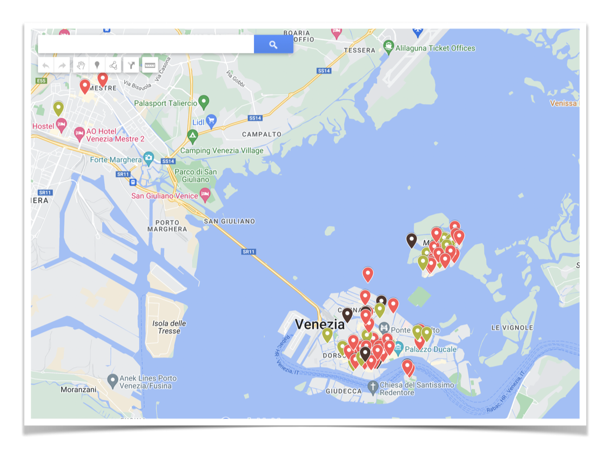

Glass Week 2023
From 2017 onwards, Venice, the illustrious city of Italy renowned for over a millennium for its beautiful art of glassmaking, has been host to an annual international celebration known as “The Venice Glass Week.”
This festival was founded with a noble purpose: to commemorate, uphold, and propagate the cherished tradition of glass craftsmanship, which has not only manifested as an artistic expression but has also played a pivotal role in the economic fabric of city.
The seventh edition of the event will take place from 9th to 17th September 2023.
Official website Venice Glass Week 2023
And…
As you may know if you are reading this blog, I’m a novice stained glass hobbyist slowly delving deeper into the world of this art form.
This year, upon discovering an event I had never attended before, I made the decision to go. The event is the Venice Glass Week 2023.
Since the beginning of the year, every month, I have been monitoring the website to discover which events and guests would be featured.
In March, still nothing 😔
April, empty 🫥
May, nothing 😧
June, there were some signs of movement 🫨
When July arrived, the first set of events appeared on the website!
Finally, I can explore all the possibilities, opportunities! A lot of Useful information to plan the trip!
And what if I wanted to see the information about the various events on a map in order to understand which areas are most convenient for finding accommodation and getting around?
The website is full of information, filters, posts… there should be a map with all these activities!
…
Unfortunately, the answer is no.
The only way to navigate through all these events is to visit the “events” main page that contains about a hundred of them and view each on for details, descriptions and dates.
What is missing?
Some of the key concepts in information science includes:
Data: Raw facts or observations. (The individual blog posts describing the events)
Information: Data that has been processed and given meaning. (The events are filterable and organized in a table on the website)
Knowledge: Information that has been organized and structured so that it can be used to make decisions. (The data is shown on a map)
While the first two points (Data and Information) are available and I can find everything I need on the website, in order to use that data for my purpose I need to do something.
First step: Retrieve the data
Crawling and extracting data on the internet is a funny hobby. I worked on this type of task in the past and… guess what? I loved it.
Before all the data extraction, download the source of the website (I don’t want to make a request every step of extraction):
def download_url_to_file(url, file_path):
try:
# Send an HTTP GET request to fetch the HTML content
response = requests.get(url,headers={'User-Agent': 'my-user-agent'})
response.raise_for_status() # Check for any errors in the response
# Write the HTML content to the file
with open(file_path, 'wb') as file:
file.write(response.content)
print(f"HTML content downloaded and saved to '{file_path}' successfully.")
except requests.exceptions.RequestException as e:
print(f"Error downloading the URL: {e}")
After the download, works on the content. A really simple script that parses the content and write the data on a csv file.
from bs4 import BeautifulSoup
import csv
# Parse the HTML data
soup = BeautifulSoup(data, 'html.parser')
# Initialize a list to store the extracted data
extracted_data = []
# Find all article tags
articles = soup.find_all('article')
# Extract the desired information from each article
for article in articles:
try:
# Extract the title from the h1 tag
title = article.find('h1').text.replace('\n', '').replace('Asset 1', '').strip()
# Extract the tag from the class "tag"
tag = article.find(class_='tag').text.replace('\n', '').replace('Asset 1', '').strip()
# Extract the location from the class "event-location-name"
location = article.find(class_='event-location-name').text.replace('\n', '').replace('Asset 1', '').strip()
# Extract the address from the class "address"
address = article.find(class_='address').text.replace('\n', '').replace('Asset 1', '').strip()
# Extract the date from the class "start-day-event"
date = article.find(class_='start-day-event').text.replace('\n', '').replace('Asset 1', '').strip()
# Extract the link
link = article.find('a')['href'] if article.find('a') else ''
# Extract image
image = article.find('img')['src'] if article.find('img') else ''
# Add the extracted data to the list
extracted_data.append([title, tag, location, address, date, link, image])
except Exception as e:
print(e)
# Define the CSV file path
csv_file = 'extracted_data.csv'
# Write the extracted data to the CSV file
with open(csv_file, 'w', newline='', encoding='utf-8') as file:
writer = csv.writer(file)
# Write the column headers
writer.writerow(['Title', 'Tag', 'Location', 'Address', 'Date', 'Link', 'Image'])
# Write the extracted data rows
writer.writerows(extracted_data)
print(f"CSV file '{csv_file}' has been created with the extracted data.")
Second step: Data on a Map
Now that the data is extracted and well formatted in a csv file, it needs to be displayed on a map.
As lazy as it sounds, the wise man says “don’t reinvent the wheel”. And I didn’t.
With the help of Google My Maps and the csv file I’ve just created, the map was ready is a matter of minutes!
Third step: Share and use the map

Here the link of the Glass Week 2023 Map (updated mid july 2023)
Link: Venice Glass Week Events 2023
🫡 Mission accomplished!
After that, I used the map for my goal: finding a good zone for accomodation and discovering best events in my area.
But why this?
I usually like to add some learnings or conclusions at the end of the blog posts.
Beyond the purely technical aspect, there are many motivations in life for exercises like this: because it’s fun, because it’s useful, because you care about people and belive in the creation of opportunities.
Fun because it’s enjoyable. I love these things. Working smart to solve a problem, small or big, it’s entertaining to me, like watching a movie, and I really like “wasting time” on this.
Useful because I found a good and comfortable accommodation near the interesting area :)
For people, because the motivational lever is the desire to do something helpful for someone. Me in the first step, but also for people that I care about and will love to see happy in this travel.
And for opportunities, because we are co-makers of our own opportuninties. Care about something or someone? Do something related, suggest things, start a chat, organize a meet. This map was also the opportunity to better involve me and other people in this niche world.
If opportunity doesn’t knock, build a door
Milton Berle